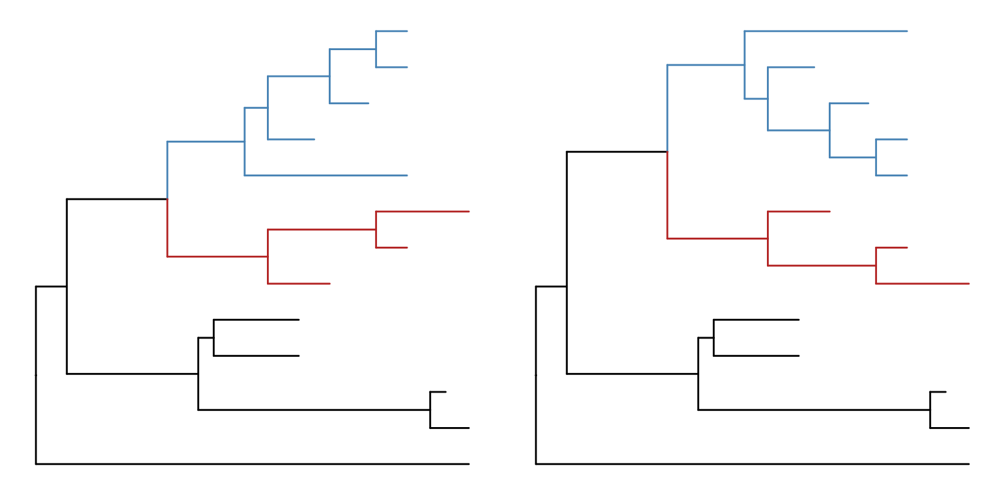
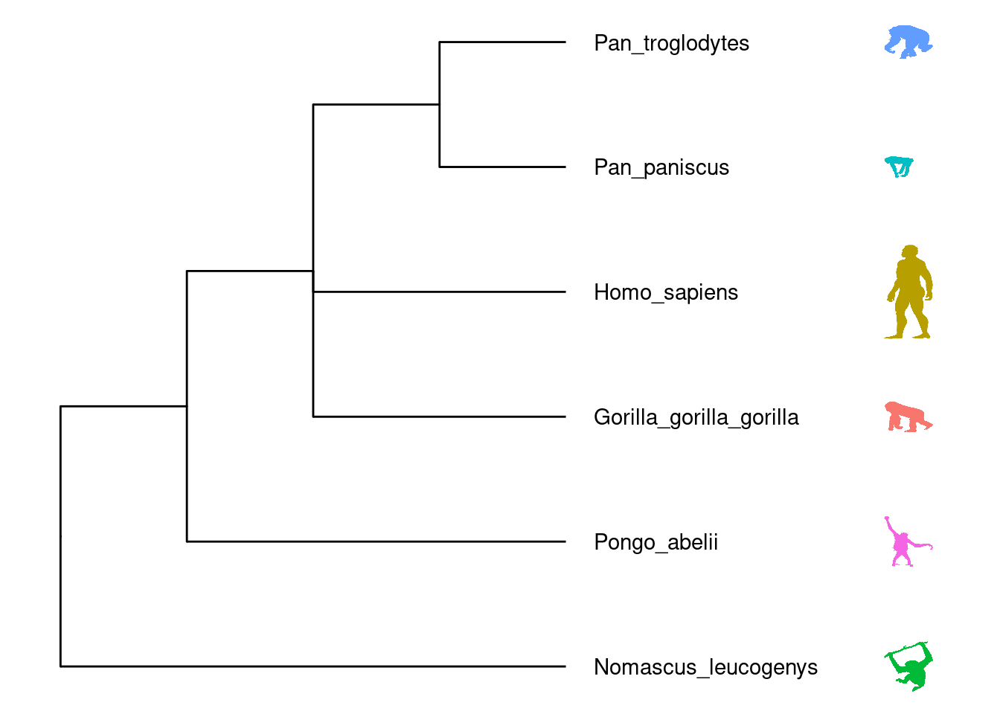
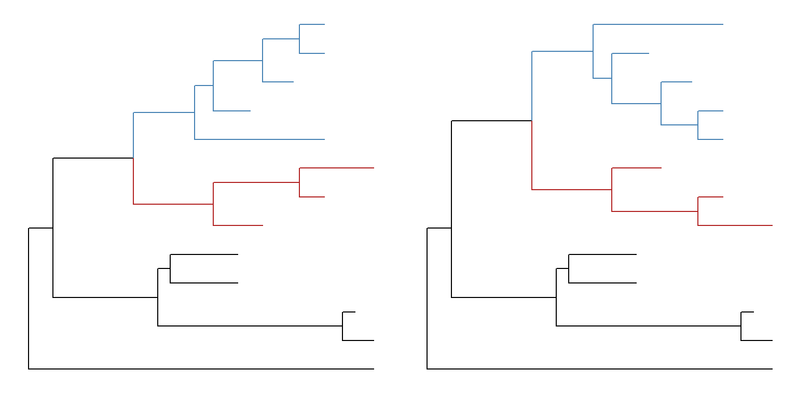
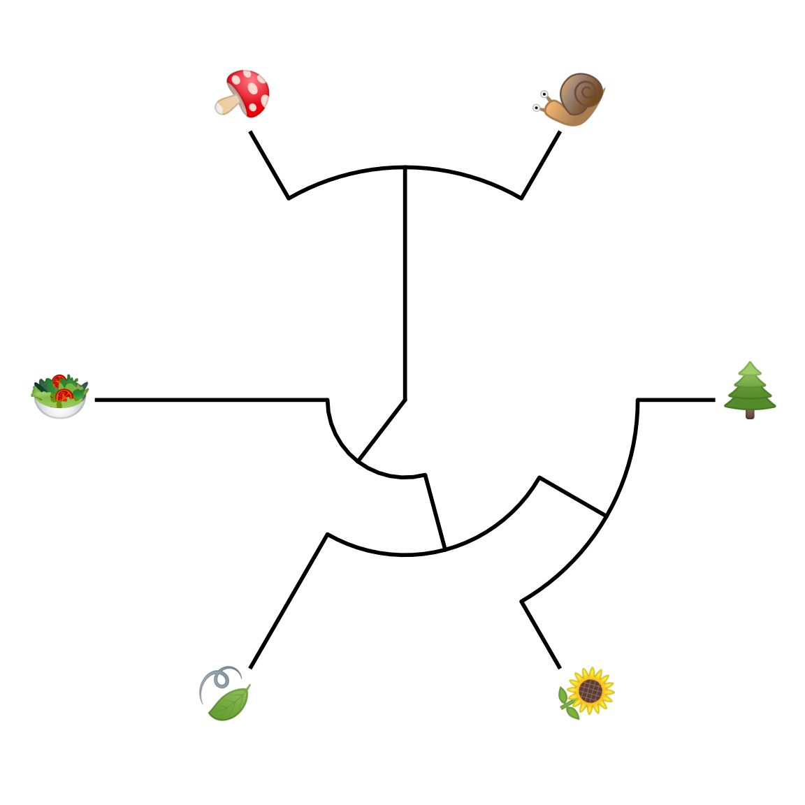
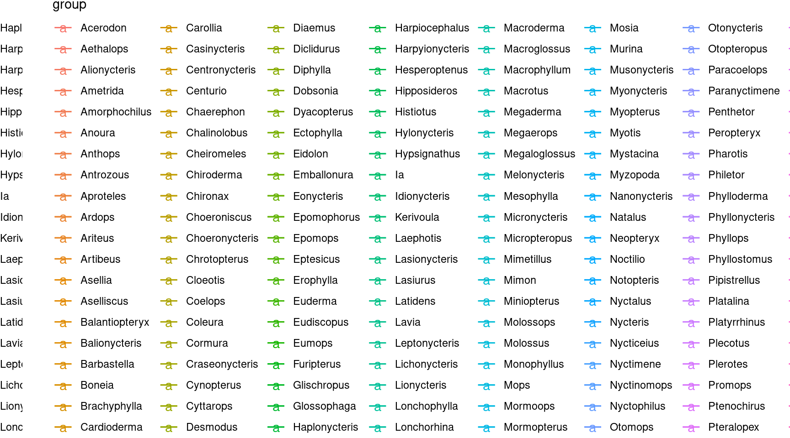
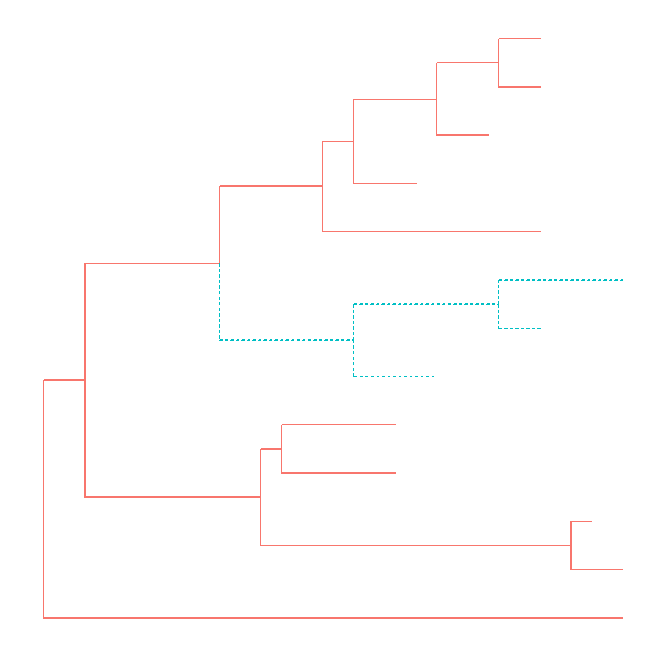

Chapter 8 Annotating Tree with Silhouette Images and Sub-plots
8.1 Annotating Tree with Images
We usually use text to label taxa, i.e. displaying taxa names. If the text is image file name (either local or remote), ggtree can read the image and display the actual image as label of the taxa. The geom_tiplab and geom_nodelab are capable to render silhouette image by internally called ggimage package.
Online tools such as iTOL (Letunic and Bork 2007) and EvolView (He et al. 2016) support displaying subplots on phylogenetic tree. However only bar and pie charts are supported by these tools. Users may want to visualize node-associated data with other visualization methods, such as violin plot (Grubaugh et al. 2017), venn diagram (Lott et al. 2015), sequence logo etc, and display them on the tree. In ggtree, all kinds of subplots are supported as we can export all subplots to image files and use them to label corresponding nodes on the tree.
library(ggimage)
library(ggtree)
nwk <- "((((bufonidae, dendrobatidae), ceratophryidae), (centrolenidae, leptodactylidae)), hylidae);"
x = read.tree(text = nwk)
ggtree(x) + xlim(NA, 7) + ylim(NA, 6.2) +
geom_tiplab(aes(image=paste0("img/frogs/", label, '.jpg')),
geom="image", offset=2, align=2, size=.2) +
geom_tiplab(geom='label', offset=1, hjust=.5) +
geom_image(x=.8, y=5.5, image="img/frogs/frog.jpg", size=.2)
8.2 Annotating Tree with Phylopic
Phylopic contains more than 3200 silhouettes and covers almost all life forms. ggtree also supports using phylopic15 to annotate the tree. Most importantly, we can color the image using numerical/categorical variable.
## tree <- ape::read.nexus("https://raw.githubusercontent.com/rgriff23/Dissertation/master/Chapter_2/data/tree.nex")
tree <- ape::read.nexus("data/tree.nex")
phylopic_info <- data.frame(node = c(124, 113, 110, 96, 89, 70),
phylopic = c("c4ac9ea6-b465-4ed0-a5de-9fe4eebd3ef9",
"5388a472-994a-48e1-86de-d988c6019e72",
"615c82cf-fabe-49f8-b571-e8117edfa212",
"63ff1b70-6b6e-4412-b4d2-b2e2fb51aa95",
"d65d5abd-df8b-4509-912c-e42f6c34861f",
"6d54acc7-9e1e-4b79-be88-4904cf58fbb5"),
species = c("galagoids", "lemurs", "tarsiers",
"cebids", "hominoids", "cercopithecoids"))
pg <- ggtree(tree)
pg %<+% phylopic_info +
geom_nodelab(aes(image=phylopic, color=species, subset=!is.na(species)),
geom="phylopic", alpha = .6) +
theme(legend.position=c(.1, .8))
ggimage package supports querying phylopic uid from scientific name, which is very handy for annotating tree with phylopic.
require(ggtree)
newick = "((Pongo_abelii,(Gorilla_gorilla_gorilla,(Pan_paniscus,Pan_troglodytes)Pan,Homo_sapiens)Homininae)Hominidae,Nomascus_leucogenys)Hominoidea;"
tree = read.tree(text=newick)
idlist = ggimage::phylopic_uid(tree$tip.label)
ids <- sapply(idlist, function(x) x[1,1])
d <- data.frame(label = tree$tip.label, uid = ids)
p <- ggtree(tree)
p %<+% d + geom_tiplab(aes(image=uid, color=label), geom="phylopic", offset=2.5) +
geom_tiplab(aes(label=label), offset = .2) + xlim(NA, 7)
8.3 Annotating Tree with Sub-plots
ggtree provides a function, inset, for adding subplots to a phylogenetic tree. The input is a tree graphic object and a named list of ggplot graphic objects (can be any kind of charts), these objects should named by node numbers. To facilitate adding bar and pie charts (e.g. summarized stats of results from ancestral reconstruction) to phylogenetic tree, ggtree provides nodepie and nodebar functions to create a list of pie or bar charts.
8.3.1 Annotate with bar charts
library(phytools)
data(anoletree)
x <- getStates(anoletree,"tips")
tree <- anoletree
cols <- setNames(palette()[1:length(unique(x))],sort(unique(x)))
fitER <- ape::ace(x,tree,model="ER",type="discrete")
ancstats <- as.data.frame(fitER$lik.anc)
ancstats$node <- 1:tree$Nnode+Ntip(tree)
## cols parameter indicate which columns store stats
bars <- nodebar(ancstats, cols=1:6)
bars <- lapply(bars, function(g) g+scale_fill_manual(values = cols))
tree2 <- full_join(tree, data.frame(label = names(x), stat = x ), by = 'label')
p <- ggtree(tree2) + geom_tiplab() +
geom_tippoint(aes(color = stat)) +
scale_color_manual(values = cols) +
theme(legend.position = "right") +
xlim(NA, 8)
p + geom_inset(bars, width = .08, height = .05, x = "branch") 
Figure 8.1: Annotate internal nodes with barplots.
Users can set the color via the parameter color. The x position can be one of ‘node’ or ‘branch’ and can be adjusted by the parameter hjust and vjust for horizontal and vertical adjustment respecitvely.
8.3.2 Annotate with pie charts
Similarly, users can use nodepie function to generate a list of pie charts and place these charts to annotate corresponding nodes. Both nodebar and nodepie accepts parameter alpha to allow transparency.
pies <- nodepie(ancstats, cols = 1:6)
pies <- lapply(pies, function(g) g+scale_fill_manual(values = cols))
p + geom_inset(pies, width = .1, height = .1) Figure 8.2: Annotate internal nodes with pie plots.
8.3.3 Annotate with other types of charts
The inset function accepts a list of ggplot graphic objects and these input objects are not restricted to pie or bar charts. They can be any kinds of charts and hybrid of these charts.
pies_and_bars <- pies
i <- sample(length(pies), 20)
pies_and_bars[i] <- bars[i]
p + geom_inset(pies_and_bars, width=.08, height=.05)Figure 8.3: Annotate internal nodes with different types of subplots (bar and pie).
8.4 Have Fun with Phylomoji
#phylomoji is fun and it is internally supported by ggtree since 201516.
Here, we will use ggtree to recreate the figure:

library(ggplot2)
library(ggtree)
tt = '((snail,mushroom),(((sunflower,evergreen_tree),leaves),green_salad));'
tree = read.tree(text = tt)
d <- data.frame(label = c('snail','mushroom', 'sunflower',
'evergreen_tree','leaves', 'green_salad'),
group = c('animal', 'fungi', 'flowering plant',
'conifers', 'ferns', 'mosses'))
ggtree(tree, linetype = "dashed", size=1, color='firebrick') %<+% d +
xlim(0, 4.5) + ylim(0.5, 6.5) +
geom_tiplab(parse="emoji", size=15, vjust=.25) +
geom_tiplab(aes(label = group), geom="label", x=3.5, hjust=.5)Figure 8.4: Parsing label as emoji. Text (e.g. node or tip labels) can be parsed as emoji.
Note that the output may depends on what emoji fonts installed in your system17.
With ggtree, it is easy to generate phylomoji. The emoji is treated as text, like abc. We can use emojis to label taxa, clade, color and ratate emoji with any given color and angle. This functionality is internally supported by the emojifont package.
8.4.1 emoji in cirular/fan layout tree
p <- ggtree(tree, layout = "circular", size=1) +
geom_tiplab2(parse="emoji", size=10, vjust=.25)
print(p)


8.4.2 emoji to label clades
set.seed(123)
tr <- rtree(30)
ggtree(tr) + xlim(NA, 5.2) +
geom_cladelabel(node=41, label="chicken", parse="emoji",
fontsize=12, align=TRUE, color="firebrick") +
geom_cladelabel(node=53, label="duck", parse="emoji",
fontsize=12, align=TRUE, color="steelblue") +
geom_cladelabel(node=48, label="family", parse="emoji",
fontsize=12, align=TRUE, color="darkkhaki")
8.4.3 Apple Color Emoji
Although R’s graphical devices don’t support AppleColorEmoji font, it’s still possible to use it. We can export the plot to svg file and render it in Safari.
library(ggtree)
tree_text <- "(((((cow, (whale, dolphin)), (pig2, boar)), camel), fish), seedling);"
x <- read.tree(text=tree_text)
library(ggimage)
library(gridSVG)
p <- ggtree(x, size=2) + geom_tiplab(size=20, parse='emoji') +
xlim(NA, 7) + ylim(NA, 8.5) +
geom_phylopic(image="79ad5f09-cf21-4c89-8e7d-0c82a00ce728",
color="firebrick", alpha = .3, size=Inf)
p
ps = grid.export("emoji.svg", addClass=T)
8.4.4 Phylomoji in ASCII art
This is also possible, please refer to Appendix D for details.
References
Grubaugh, Nathan D., Jason T. Ladner, Moritz U. G. Kraemer, Gytis Dudas, Amanda L. Tan, Karthik Gangavarapu, Michael R. Wiley, et al. 2017. “Genomic Epidemiology Reveals Multiple Introductions of Zika Virus into the United States.” Nature 546 (7658): 401–5. https://doi.org/10.1038/nature22400.
He, Zilong, Huangkai Zhang, Shenghan Gao, Martin J. Lercher, Wei-Hua Chen, and Songnian Hu. 2016. “Evolview V2: An Online Visualization and Management Tool for Customized and Annotated Phylogenetic Trees.” Nucleic Acids Research 44 (W1): W236–241. https://doi.org/10.1093/nar/gkw370.
Letunic, Ivica, and Peer Bork. 2007. “Interactive Tree of Life (iTOL): An Online Tool for Phylogenetic Tree Display and Annotation.” Bioinformatics 23 (1): 127–28. https://doi.org/10.1093/bioinformatics/btl529.
Lott, Steffen C., Björn Voß, Wolfgang R. Hess, and Claudia Steglich. 2015. “CoVennTree: A New Method for the Comparative Analysis of Large Datasets.” Frontiers in Genetics 6: 43. https://doi.org/10.3389/fgene.2015.00043.